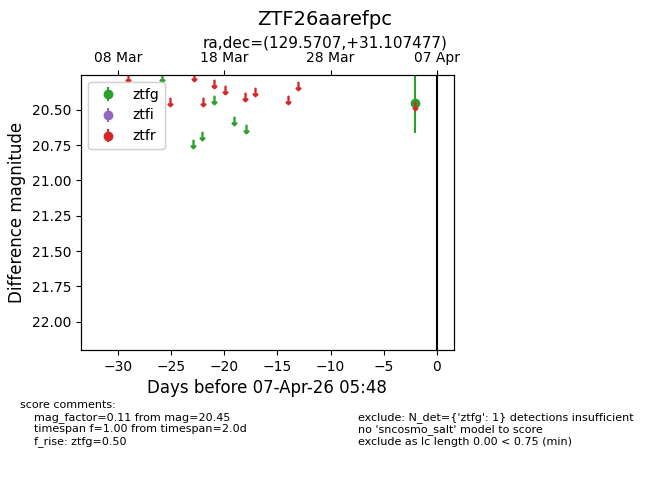
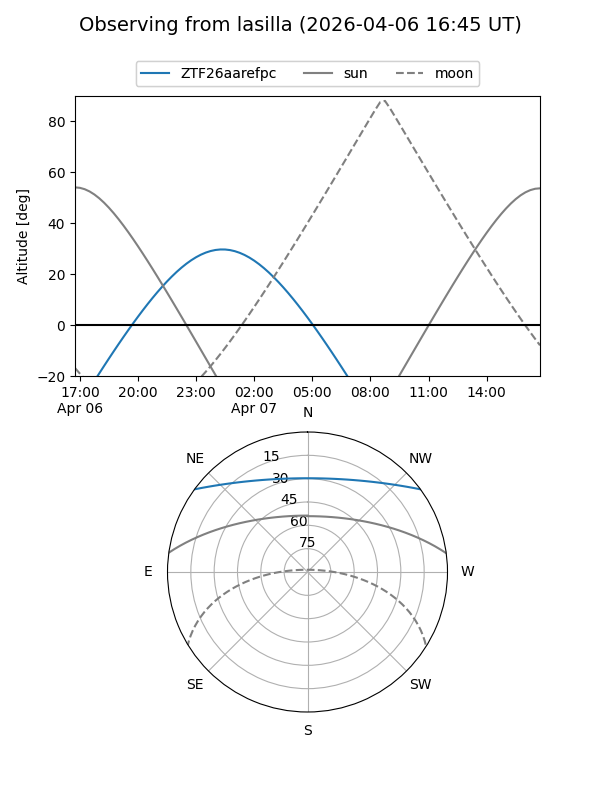
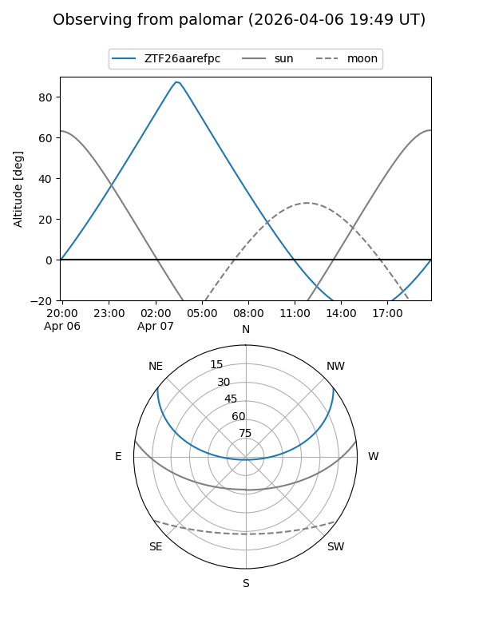

ZTF26aarefpc
Target ZTF26aarefpc at 2026-04-07 05:51
Aliases and brokers:
FINK: link
Lasair: link
ALeRCE: link
alt names
ZTF26aarefpc (ztf,fink_ztf)
Coordinates:
equatorial (ra, dec) = 129.5707,+31.10748
equatorial (HMS+DMS) = 08:38:16.98,+31:06:26.92
galactic (l, b) = (192.5397,+35.31702)
Flags:
Photometry:
last ztfg=20.45
1 ztfg detections
Lightcurve

Visibility


Additional plots